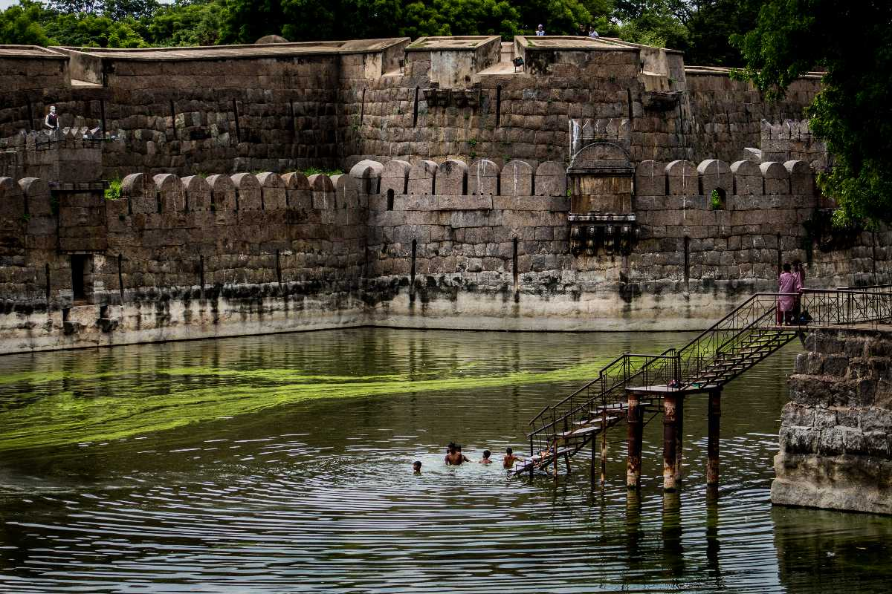

VELLORE FORT PARK
Vellore Fort Park: A Green Escape Amidst Historic Walls

Vellore Fort Park is a serene and well-maintained green space located near the historic Vellore Fort in Tamil Nadu. Surrounded by the ancient stone walls of the fort, the park offers a peaceful environment that contrasts beautifully with the fort rich and rugged history. It serves as a popular spot for locals and tourists alike, providing a relaxing escape in the heart of the city.
The park features neatly landscaped gardens, walking paths, benches, and shaded areas, making it ideal for morning walks, evening strolls, or casual family outings. With a variety of flowering plants, lush lawns, and occasional water features, the park adds natural beauty to the historical ambiance of the area. Children often enjoy the play area, and visitors can also admire scenic views of the forts moat and walls while enjoying the greenery.
Vellore Fort Park is more than just a recreational space it enhances the overall experience of visiting the Vellore Fort by offering a calm and refreshing atmosphere, making it a perfect blend of history and nature.